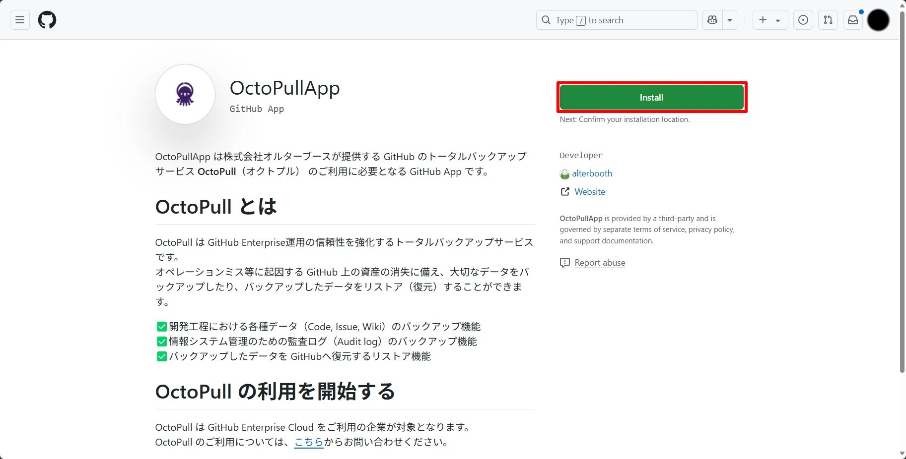
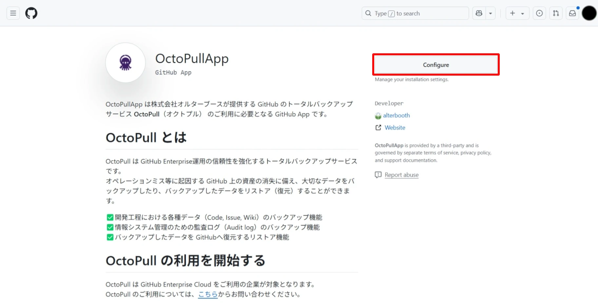
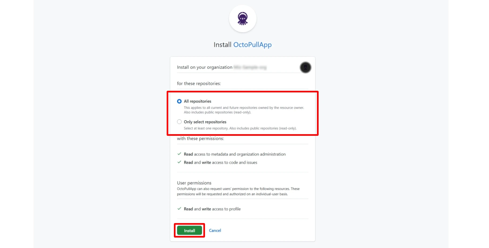
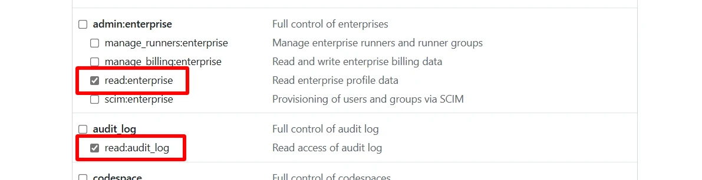
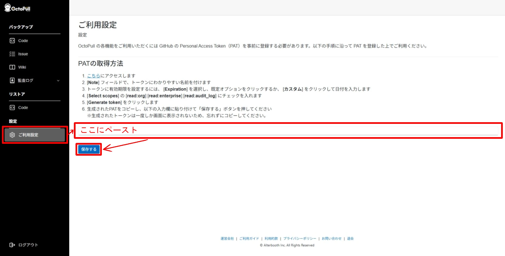

セットアップ手順
OctoPullのご利用にあたり、以下のすべての手順を完了しセットアップを行ってください。
GitHub App「OctoPullApp」のインストール
- GitHub Appの「OctoPullApp」のページ にアクセスします。
-
[Install] ボタンをクリックします。
はじめてインストールする場合
2つ目以降のOrganizationにインストールする場合
 -
「OctoPullApp」をインストールするOrganizationを選択します。
※OctoPullの利用申請が完了したEnterpriseアカウントには存在しないOrganizationに「OctoPullApp」をインストールしてもデータのバックアップはできませんのでご注意ください。
-
バックアップを作成するリポジトリを選択した後、[Install] をクリックしインストールを開始します。
 -
「Okay, OctoPullApp was installed on the @{Organizationアカウント名} account」という青帯のメッセージが画面上部に表示されたらインストールは完了です。
GitHub Personal Access Tokenの登録
-
GitHubのPersonal Access tokens (classic)のページ にアクセスし、[Generate new token] プルダウンから [Generate new token (classic)] を選択します。
-
画面上部に表示されている次の2つのフィールドを入力します。
-
[Note] フィールド：トークンを判別できるようなわかりやすい名前を入力します。
-
[Expiration] フィールド：トークンの有効期限を設定します。
-
-
同じ画面を下にスクロールし、次の3つのスコープにチェックを入れます。
-
[read:org] スコープ
-
[read:enterprise] スコープ
-
[read:audit_log] スコープ

-
-
[Generate token] ボタンをクリックしてトークンを生成します。
-
生成されたトークンをコピーします。
-
OctoPull にアクセスし、ログインします。
-
左側のメニューから[ご利用設定] を選択します。
テキストボックスに先ほどコピーしたGitHub Personal Access Tokenをペーストし、[保存する] ボタンをクリックします。

以上でセットアップは完了です。
セットアップがうまくいかない場合やその他のご質問がある場合は、お問い合わせフォーム からお問い合わせください。